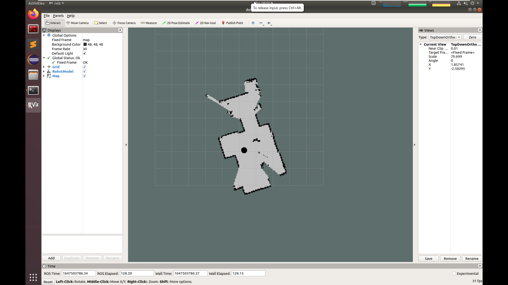

Lab 5: Mapping and Navigation
In this lab, we will use gmapping package for SLAM. The gmappimg algorithm implements SLAM using a Rao- Blackwellized particle filter. It is probably the most used SLAM algorithm in ROS. In the first part of the lab, you will use gmapping to build your own map. In the second part, you will launch the ROS Navigation Stack to let your robot move autonomously.
Getting Started
Install the navigation ros package in your VM.
sudo apt install ros-melodic-navigation
Clone the example code into your catkin workspace:
cd ~/catkin_ws/src
git clone https://github.com/cmuq-robotics/cmuq-turtlebot-remote.git
Launching the example
Connect to one of the robots and edit the file connect_robot.sh with the correct values.
Open a new terminal window and set the environment variables:
source ~/connect_robot.sh
Use the tool rostopic to see the list of topics currently used in the network and check that you can connect to your robot.
rostopic list
Launch the teleop_key node to move your robot:
roslaunch turtlebot_teleop keyboard_teleop.launch
Part I: Using GMapping
For the first part, use gmapping to build our own map. Gmapping implements a laser-based SLAM algorithm with a particle filter. We will study SLAM in the next weeks. For now, let’s learn how to use it.
Open a new terminal window and set the environment variables:
source ~/connect_robot.sh
Launch the gmapping_demo
roslaunch gmapping_demo gmapping.launch
In a new terminal, set the environment variables and run:
source ~/connect_robot.sh
roslaunch turtlebot_rviz_launchers view_navigation.launch
You should now have an RViz window.
While moving your robot, you will observe how the map is being built.
{kind=link}
When you are done, you can save the map. In a new terminal, set the environment variables and run:
source ~/connect_robot.sh
rosrun map_server map_saver -f ~/catkin_ws/src/cmuq-turtlebot-remote/turtlebot2_navigation/current_map/map
You now have a copy of the map in your catkin workspace.
Now it’s time to stop gmapping and start the navigation stack.
Part II: Using the ROS navigation stack
For the second part, you should kill all the nodes launched in the first part, including rviz.
Open a new terminal window and set the environment variables:
source ~/connect_robot.sh
Launch the navigation stack
roslaunch turtlebot2_navigation navigate.launch
In a new terminal, set the environment variables and run:
source ~/connect_robot.sh
roslaunch turtlebot_rviz_launchers view_navigation.launch
You should now have an RViz window.
Localize your robot like we did in the last lab. Then, send a goal pose and see the magic happen.